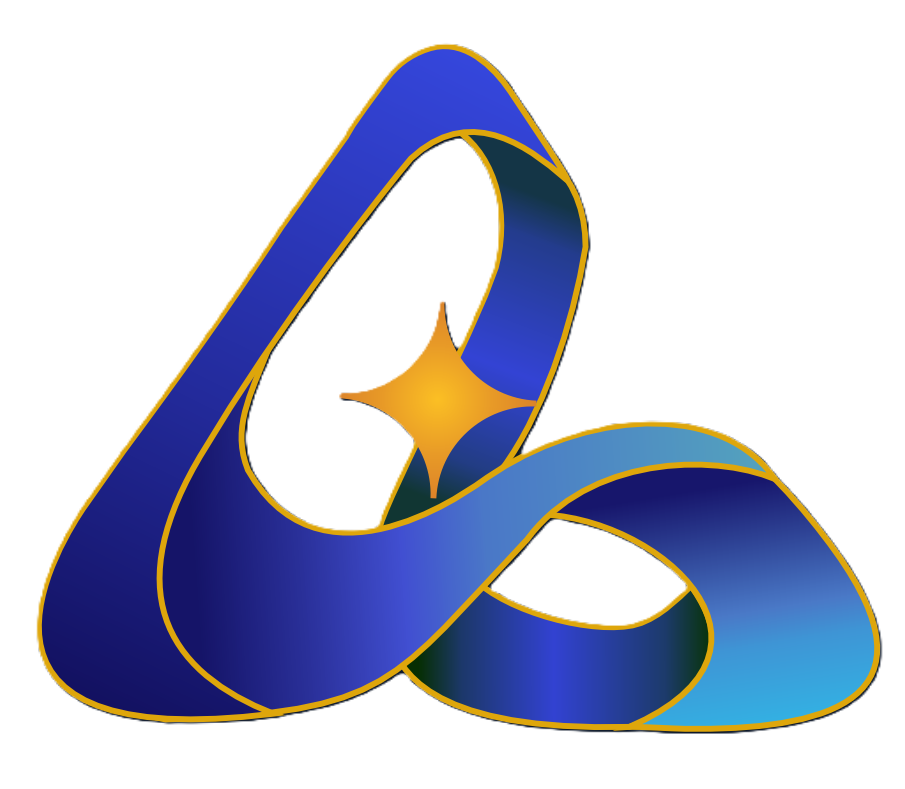
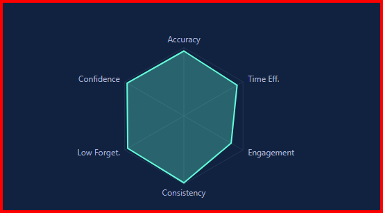
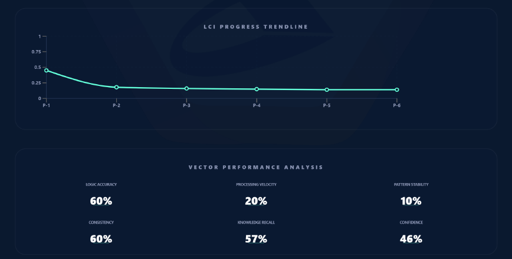

Final-Year Engineering Students
Turn your projects and workshop experiences into a structured capability portfolio that speaks to employers — even before your degree is complete.

ISAC is MRDI's capability intelligence ecosystem — two distinct platforms working in tandem to structure learning journeys and map the skills engineers actually carry into the real world.
Each product solves a distinct challenge in engineering education. Together, they create a complete picture of learner capability.
Structured Intelligence · Learning Management System
ISAC.SI is a capability-based LMS built specifically for MRDI's training programs. It moves beyond conventional grading to track structured learning milestones — giving students, tutors, and directors a shared view of progress that is grounded in competency.
Experience Intelligence · AI Capability Profiler
ISAC.XP is an AI-powered capability profiler. It helps engineering students discover and articulate their real-world strengths — not just what they studied, but what they can actually do. Powered by the Learning Capability Index (LCI), ISAC.XP translates experience into measurable, hireable capability.
From enrolling in a program to landing a job — ISAC tracks every step of a learner's real-world capability development.
Students enrol in a structured 6-month engineering skill development program at MRDI.
Every milestone, project, and module is tracked in ISAC.SI — visible to student, tutor, and director in real time.
AI conversations reveal what the student can actually do — far beyond syllabus completion. LCI score is generated.
A shareable, data-backed Capability Portfolio is generated — ready for recruiters, internships, and placement drives.
Partners like Patel Mobility and OEM dealerships hire from MRDI cohorts, guided by ISAC capability data — not just resumes.
Grades measure what you memorised. The LCI measures how you learn, adapt, and execute — four behavioral dimensions that predict real-world engineering performance.
Developed by MRDI as an alternative to traditional assessment, LCI powers the ISAC.XP scoring engine. It is designed to scale across corporate L&D and global talent markets.
Discover Your LCI Score →

Answer a few AI-driven questions about your projects, habits, and learning style. ISAC.XP builds your capability map in minutes — no grades required.
⚡ Start Your Free Capability ProfileSample Profile · Automotive Engineering Student
AI Summary: "Strong curiosity and learning velocity suggest high potential for R&D and prototyping roles. Execution quotient shows room to grow through structured project completion."
Build Your Own Profile →Whether you're a student looking for your first job, or an institute trying to prove training outcomes — ISAC has a specific answer for you.
Turn your projects and workshop experiences into a structured capability portfolio that speaks to employers — even before your degree is complete.
Showcase hands-on skills in servicing, diagnostics, and fabrication using ISAC.XP — because your practical knowledge deserves to be visible.
Use LCI-verified capability data from ISAC.SI to make faster, smarter hiring decisions from MRDI's trained cohorts.
Integrate ISAC.XP as a pre-placement profiling tool to match graduates with appropriate industry roles based on real capability data.
If you build things, prototype mechanisms, or work on live projects — ISAC.XP can articulate your innovation DNA to the world.
Use the LCI framework to assess and develop technical workforce capability as an alternative to traditional competency matrices.
Discover what you're actually capable of. Build a portfolio that employers trust over a marksheet.
Track every student's capability growth in real time. Intervene early. Coach with data.
Prove training outcomes with structured capability evidence. Build accreditation-ready reports.
Access LCI-verified talent profiles. Hire based on demonstrated capability, not just certificates.
Both products share a core philosophy — but serve distinct purposes in the capability development journey.
| Feature Area | ISAC.SI | ISAC.XP |
|---|---|---|
| Primary Purpose | Structured Learning Management | AI Capability Profiling & Mapping |
| User Type | MRDI enrolled students, tutors, directors | Any engineering student or professional |
| Core Technology | Supabase, mobile-first web app | Gemini AI + LCI Engine |
| Output | Progress dashboards, Lci-matrix milestone reports | LCI Score + Capability Portfolio |
| Requires Enrolment? | Yes — MRDI program required | No — open access, free to try |
| Assessment Method | Tutor-verified milestones | AI conversational profiling |
| Validation | SVNIT Surat SSIP 2.0 | MRDI cohort + pilot testing |
| Best For | Structured institute-based learning | Self-discovery, placement prep, hiring |
ISAC is not a concept. It is a functioning system running inside MRDI's active cohorts — with placement partnerships and institutional validation already established.
ISAC.XP takes less than 10 minutes. Get your LCI score, discover your strongest capability dimensions, and start building a portfolio that means something.